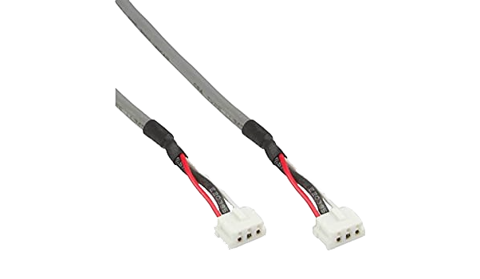
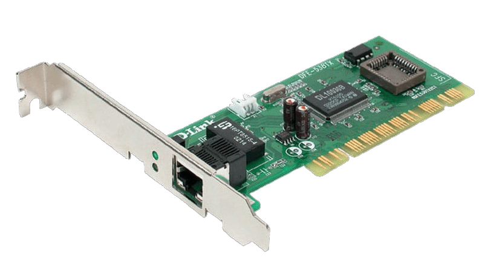

Wake-up-LAN
El conector Wake-up-LAN y modem sirve para encender remotamente computadoras apagadas. Las utilidades son muy
variadas, tanto para encender un Servidor Web/FTP para acceder de manera remota los archivos que guardas en tus
equipos.

